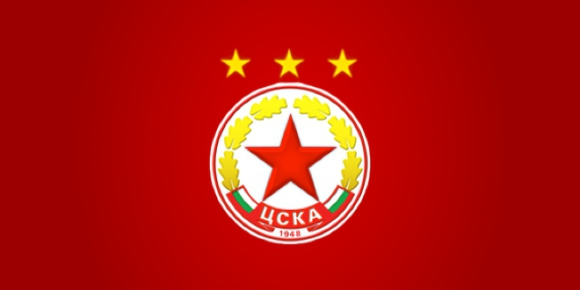

Ще живее ли ЦСКА?
Миналата година отиде в историята с най-голямото футболно престъпление - наглият, умишлен фалит на гранда, страшилището ЦСКА. Клубът, от който всички противници се страхуваха, тъй като е взимал скалпа на водещи европейски клубове и е карал милиони хора да се гордеят, че са българи. Случи се пред очите на цяла България, но виновни няма. Ето, че по-малко от година има шанс частица от ЦСКА да се запази жива.
Двата отбора с името “ЦСКА” вече предявиха претенции, но само този, който изкупи активите и емблемата на старото дружество, може да каже: “Ние сме ЦСКА”!. Този, който спечели търга за стадион “Българска армия” и “Панчарево”, и ги превърне в европейски вид. Тук има нещо много важно. Нека дадат обектите само при предоставяне на банкова гаранция. Защото през годините сме ставали свидетели на какви ли не договори и обещания.
Оставете настрана всички брътвежи, че юридическите неща не са важни. Неизменна задача на заинтересованите лица и страни е да втълпяват подобни небивалици. За всички истински цесекари, а те са много, моралът, ценностната система, успехите, историята и традициите на ЦСКА са от голямо значение. Те стоят над всичко. С тях не се правят компромиси и не се търгуват. Ако ЦСКА по някаква обективна причина реши да добави някакви символи към името си, няма да бъде голям проблем. Какво значение дали клубът е регистриран като “ЦСКА”, или като например “ЦСКА София”?
Когато обаче се засилваш и тичаш с бясна скорост, за да заобиколиш правилата и законите, тогава олекваш. Нищо, че се мислиш за велик, тъй като си най-големият тарикат и си “изпържил” всички. Когато не зачиташ историята и традициите на един велик клуб като ЦСКА, а в същото време искаш и твърдиш, че си ЦСКА, няма как да получиш подкрепа. Може да крещиш, че си провоприемник, но никой няма да те чуе.
Наближава важната дата 30 март. Този път само може да се надяваме, че няма да има чужда намеса и външни фактори да решават съдбата на ЦСКА по нечестен начин. ЦСКА и стотиците хиляди фенове няма да имат полза, ако на дадена личност му се сервират на тепсия активите на дружеството. Само, защото се ползва с протекции, но нищо не прави. Независимо как се казва той. Все тая кой ще ги вземе, стига това да се случи по правилата. Дано да е човек, който има желание и качества да развива ЦСКА. Да е кадърен, далновиден и предостави по-добри условия…
Няма как да има два, три или повече ЦСКА-та. ЦСКА е само един и българският футбол има нужда от него. И при това от силен ЦСКА, не от такъв, който само да живурка. Ще остане този, който работи честно, правилно и иска да се развива. Сега всеки, който иска, може да помогне. Активите не струват малко пари, но не са и 20-30 милиона, нали?
Хората не са идиоти. Дори и временно да се заблудят, рано или късно ще вземат правилната страна. Ще подкрепят този, който работи за възраждането на клуба, а не този, който има лична изгода и иска да се възползва от огромната институция. Бъдете сигурни, че наказателният вот няма да закъснее!